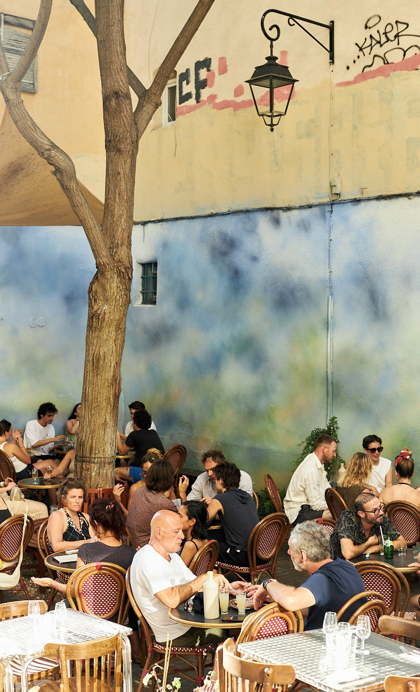

Une maison qui a de la mémoire
D'un vieux fournil historique à un repaire de copains gourmands — le Panier bat son plein.
Sous les voûtes de pierre
Le 16 Rue du Refuge, au cœur du Panier, a longtemps abrité un fournil traditionnel marseillais. Bâti sur des fondations séculaires, l'endroit se distingue par ses arches en pierre calcaire, son grand lustre chaleureux et son carrelage d'époque qui gardent l'esprit des grandes tablées de quartier.
Quand nous avons pris possession des lieux, les voûtes étaient là, fortes et rassurantes. Nous avons gardé cette patine et cette authenticité brute pour y insuffler la vie d'un vrai bistrot d'aujourd'hui.

« Au 16 Rue du Refuge, on ne vient pas seulement pour manger : on vient pour se poser, partager et goûter à ce que Marseille a de plus vrai. »
— L'Esprit de la maisonMaturation, découpe & grillades
Au Saint Esprit, le respect de la matière première n'est pas un slogan. Notre cave de maturation trône fièrement au sein du restaurant : canettes AOP des Dombes, porc noir de Bigorre, cochons du Mont Lagast, bœufs de race normande y affinent leurs sucs et leur tendreté.
Poissons de roche tout juste débarqués des barques marseillaises de la Madrague et du Vieux Port, gambas saisies au feu vif, jus corsés mijotés des heures : ici, tout est fait maison, sans concession.

La vie marseillaise en terrasse
Dès que le ciel bleu s'installe, la placette pavée s'anime. À l'ombre de l'arbre et le long des façades ocre du Panier, nos tables en bistrot accueillent les discussions animées, les carafes fraîches et le tintement des verres.
À la tombée de la nuit, les loupiotes s'allument, la rue devient une scène de vie et le temps s'arrête. C'est l'essence même du Saint Esprit.


L'Équipe du Refuge
Cuisine, salle & passion partagée
Derrière les fourneaux et au service, c'est une équipe unie qui fait vibrer le 16 Rue du Refuge. Passionnés de goût, de produits vivants et de vinyles bien choisis, chacun apporte son énergie et son amour pour la gastronomie de copains.
Ici, la créativité est collective. La carte évolue constamment en symbiose avec les arrivages de nos maraîchers locaux et des pêcheurs du littoral phocéen.
Direct producteurs
Big Bloom, Ferme Vava, Côté Fish — circuit court et respect absolu de la saison.
Instinct & feu
Cuissons précises, sauces franches et jus réduits avec patience.
Vins vivants
Des quilles de vignerons sincères, nature et engagés.
Le sens de l'accueil
La générosité marseillaise, avec le sourire et sans manières.
Venez goûter par vous-mêmes
La meilleure façon de comprendre ce qu'est Le Saint Esprit, c'est de vous asseoir à table.